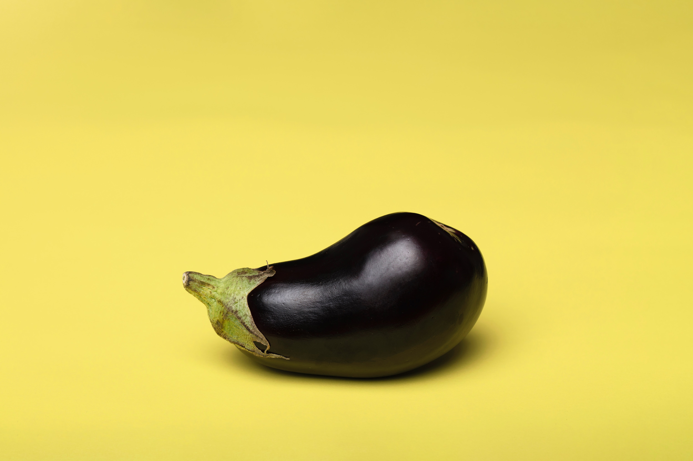

:) things can give you good may be or not
- kimchi fried rice
- sandwich
- 영어 못해먹겠다** 상콤한 가지볶음
3. 영어 못해먹겠다** 상콤한 가지볶음
물렁이는 가지가 싫어요!

이제는 이대로 해보세요.
가지를 먼저 뚝딱-뚝딱 잘라주고, 식용유를 두른 팬에 볶아줍니다.
센불에 볶은 뒤 바로 간장 두수저, 설탕두수저, 식초 한수저를 넣고 볶아줍니다. 총총 썬 고추도 같이 투하
노사봉씨의 레시피를 기반으로 최고의 레시피입니다.